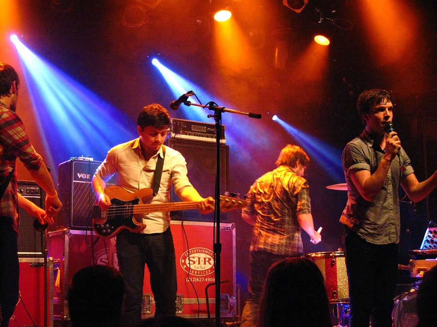

Salt-N-Pepa, Friendly Fires, Gossip play Good Vibrations sideshows



Want the chance to catch some of the Good Vibrations Festival’s top-tier international guests in a different setting? Jam Music are only too happy to oblige. It’s just been announced that the mighty Beth Ditto led trio Gossip will be playing a show at The Enmore in February, with the impressive support of indie-dance favourites Friendly Fires warming them up.
And want another slice of the old-school hip hop you’ll be seeing at Good Vibrations? Salt-N-Pepa will also be playing a sideshow at The Metro in mid February, making good with their fans again after being forced to cancel their national comeback tour that was originally scheduled in for last year.
This is in addition to the show with Z-Trip and Spinderella that’s already been announced for The Forum around the time of the tour. It’s looking to be a very busy February, so stay tuned to ITM for all your Good Vibrations related news.
Gossip play the Enmore Theatre in Sydney on Tuesday 16th February, with special guests Friendly Fires + DJ Nick Findlay.
Salt-N-Pepa play The Metro in Sydney on Wednesday 17th February 2010, supported by KillaQueenz + Hoops
Z-Trip hits The Forum in Sydney on Friday 19th February 2010, supported by Spinderella.
For all your Good Vibrations needs, check out ITM’s Festival Page for loads of news, interviews and more. National dates below…
Sat 13 Feb – Centennial Park, Sydney
Sun 14 Feb – Claremont Showground, Perth
Sat 20 Feb – Parklands Showgrounds, Gold Coast
Sun 21 Feb – The Nursery, Flemington Racecourse, Melbourne